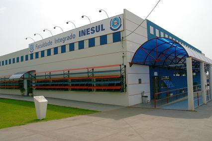
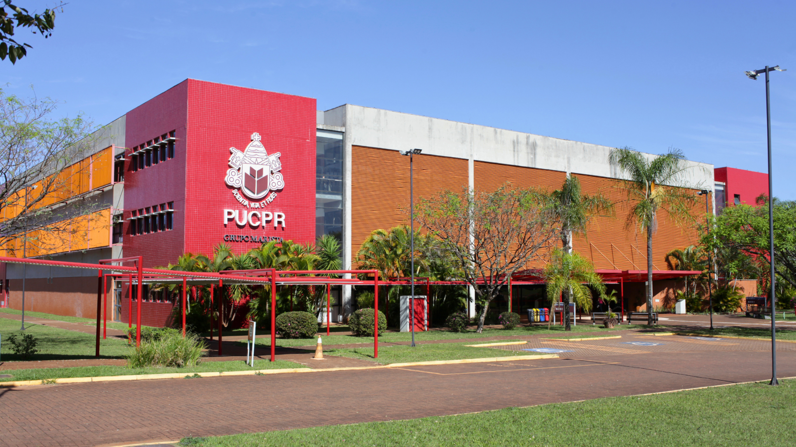

1991 — 1992
Onde tudo começou
EEPG Prof. Darcy Fontanelli
Foi em Araçatuba/SP que minha trajetória escolar começou.
Na EEPG Prof. Darcy Fontanelli cursei a 1ª e a 2ª séries.
MINHA TRAJETÓRIA
MINHA FORMAÇÃO
Minha vida escolar começou na cidade de Araçatuba, interior de São Paulo . Ao longo dos anos, os estudos sempre estiveram acompanhados pela curiosidade e pela vontade de aprender coisas novas.
Foi em Araçatuba/SP que minha trajetória escolar começou.
Na EEPG Prof. Darcy Fontanelli cursei a 1ª e a 2ª séries.


Entre 1994 e 1999 estudei no Centro Educacional SESI 349 , onde cursei da 3ª à 8ª série.
Foi uma etapa que acompanhou grande parte da minha infância e o início da adolescência.

Entre fevereiro e junho de 1997 fiz meu primeiro curso extracurricular: Datilografia.
É interessante olhar para trás e perceber que meu contato com teclados começou em uma máquina de escrever.
Muitos anos depois, o teclado continuaria fazendo parte da minha história, mas agora por meio dos computadores e da tecnologia.

Nos anos de 2000 e 2001 cursei o 1º e o 2º colegial na EE Manoel Bento da Cruz, em Araçatuba/SP.
Foi justamente nessa fase que os estudos começaram a caminhar junto com minha entrada no mercado de trabalho.

Durante o primeiro ano do colegial, ingressei também na Polícia Mirim de Araçatuba .
Com aproximadamente quatro meses de curso, conquistei minha primeira oportunidade profissional como menor aprendiz no Terceiro Cartório de Araçatuba .
Após o período como menor aprendiz, fui efetivada e permaneci trabalhando no cartório por mais quatro anos.
Foi ali que comecei a aprender, ainda muito jovem, sobre responsabilidade, compromisso e rotina profissional.

Em 2002 cursei o 3º colegial no período noturno na Escola Prof. Jorge Corrêa, em Araçatuba/SP.
Nessa fase eu já conciliava meus estudos com as responsabilidades da vida profissional.

Em 2005 concluí meu primeiro curso diretamente relacionado à informática:
Manutenção de Microcomputadores , realizado na Index Informática.
Esse foi um dos meus primeiros contatos formais com a tecnologia, uma área que muitos anos depois voltaria a ocupar um espaço importante na minha vida.
FORMAÇÃO SUPERIOR
Minha trajetória acadêmica reúne tecnologia, administração e gestão. Em 2002, iniciei Ciência da Computação nas Faculdades Thathi / COC, em Araçatuba, e interrompi o curso em 2005 ao me mudar para Araucária, no Paraná.
| Período | Curso e instituição | Situação |
|---|---|---|
| 2002–2005 | Ciência da ComputaçãoFaculdades Thathi / COC | Interrompida |
| 2008–2011 | Administração de EmpresasFANEESP | Concluída |
| 2012–2014 | Pós-graduação em Controladoria e FinançasPUCPR | Concluída |
| 2026–atual | Sistemas de InformaçãoUniversidade Vila Velha (UVV) | Em andamento |


Ponte do Bem: projeto de portal de doações para conectar pessoas e instituições. Landing Page Pessoal: aplicação de HTML e CSS na apresentação da minha trajetória.
Meu objetivo é unir minha experiência em gestão da informação com desenvolvimento de sistemas e soluções tecnológicas.